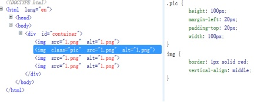
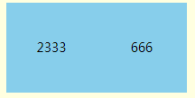

块级元素和行内元素
块级元素
div , p , form, ul, li , ol, dl, form, address, fieldset, hr, menu, table
行内元素
span, strong, em, br, img , input, label, select, textarea, cite,
块级元素的特点
1.它会自己占一行， 默认宽度等于父级元素宽度的100%
2.可以直接设置它的宽度和高度的样式
效果展示：


行内元素的特点
1.不会独自占一行，和其他元素共用一行的空间
2.它的宽度和高度由里面的内容决定
3.不能直接设置内边距和外边距
行内块元素的特点
1.具有块级元素的特点，内容区域可以自定义，margin,padding可以用了
2.2.具有行内元素的特点，可以跟任意非纯块级元素共用一行的空间
3.根据以上两个特点，其实我们就可以更好的去控制我们的排版布局 
行内块元素的垂直对齐
使用过程中要注意的地方:
1.如何水平对齐，给该行内块元素的父亲，设置text-align属性(但要注意，text-align具有可继承性，所以里面的子元素都会被设置了对应的text-align)
2.如何垂直对齐，给该行内块元素的父亲，设置行高，该行高等于父元素的高度，但要注意行高会被子元素所继承，所以需要在行内元素里，重新设置一次行高。
3.如何控制垂直对齐的方向,直接给行内元素设置vertical-align属性就可以了（前提是要设置行高）
4.如果多个行内块元素在一起，之间会出现空隙，是因为空格的原因，所以需要在他们的父元素加上font-size：0，但因为会有继承性，所以还需要给里面的子元素重新设置一个font-size。
实例

.baba{
height: 500px;
background: lightyellow;
text-align: center;
line-height: 500px;
font-size: 0;
}
.son{
height: 100px;
width: 100px;
background: skyblue;
display: inline-block;
line-height: 100px;
vertical-align: middle;
/*margin-left: 100px;*/
/*margin-top: 50px;*/
font-size: 14px;
}
</style>
</head>
<body>
<div class="baba">
<div class="son">
2333
</div>
<div class="son">
666
</div>
</div>
</body>
整个案例
<html>
<head>
<meta charset="UTF-8">
<title></title>
<style type="text/css">
/*
行内块级的区别
1.块级可以认为控制内容区域的大小，但行内元素并不支持（只能由内容本身大小决定）width height
2.块级本身会强行占一行，不允许其他元素共处一行。
行内元素会更愿意跟非块级元素共处一行，除非不够位置。
3.块级元素支持外边距和内边距，但行内元素，只支持左右方向的外边距和内边距。margin padding
* */
.baba div{
background-color: skyblue;
width: 100px;
height: 100px;
display: inline;
line-height: 100px;
}
span{
background-color: pink;
width: 100px;
height: 100px;
margin: 50px;
padding: 50px;
line-height: 100px;
display: block;
/**
*行内块元素
* 1.具有块级元素的特点，内容区域可以自定义，margin,padding可以用了
* 2.具有行内元素的特点，可以跟任意非纯块级元素玩了
* 根据以上两个特点，其实我们就可以更好的去控制我们的排版布局
*
* 使用过程中要注意的地方
* 1.如何水平对齐，给该行内块元素的父亲，设置text-align属性(但要注意，text-align具有可继承性，所以里面的子元素都会被设置了对应的text-align)
*
*/
display: inline-block;
}
.baba{
background-color:yellow;
text-align: center;
text-align: right;
height: 400px;
line-height: 400px;
}
</style>
</head>
<body>
<div class="baba">
<div>
我是块级元素
</div>
<span>
我是行内元素
</span>
</div>
</body>
</html>